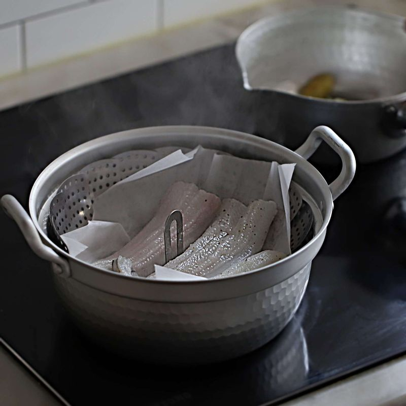
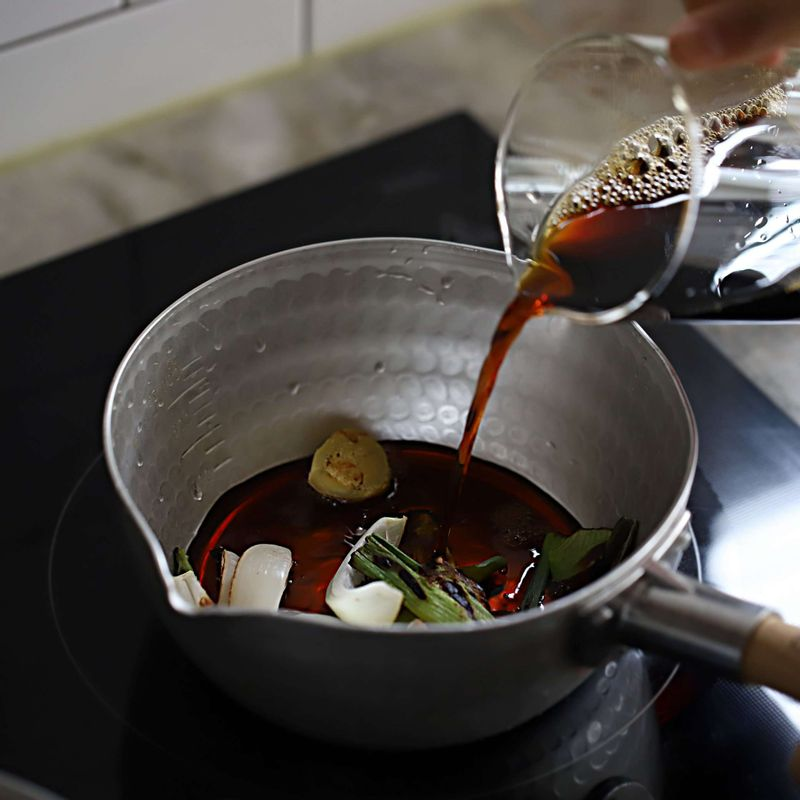
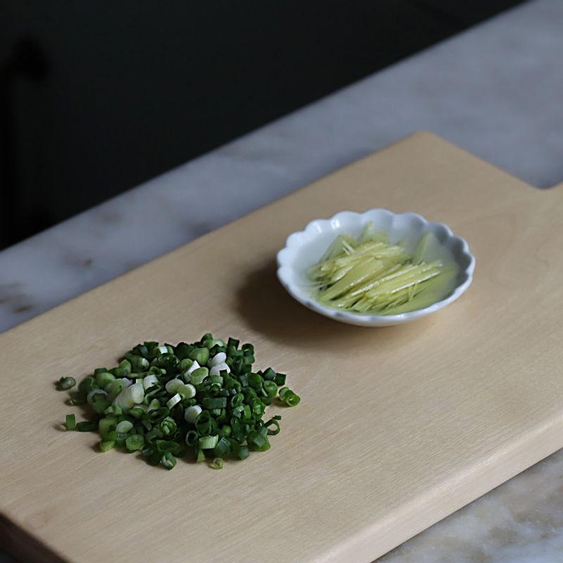
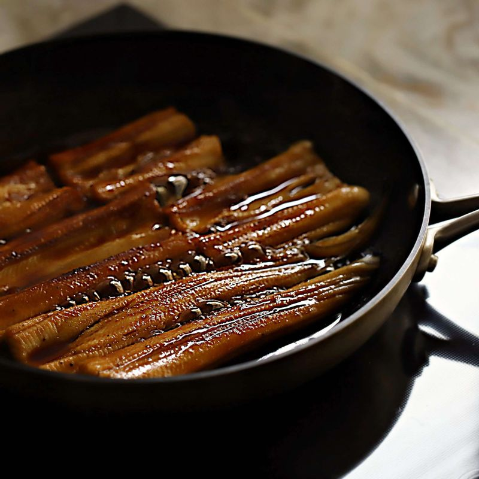

-

손질한 장어는 껍질의 미끄러운 부분을 칼등으로 긁어낸 후 찬물에 씻고 키친타월로 물기를 닦은 후 장어밑간재료에 10분 정도 재워주세요.
-

달군 팬에 야채를 태우듯 굽고, 냄비에 구운 야채와 간장소스 재료를 넣은 후 끓으면 불을 중약불로 줄여 15분 정도 끓여 체에 걸러주세요.
-

생강은 곱게 채를 썬 후 찬물에 5분 정도 담갔다가 물기를 빼주세요. 실파는 송송 썰어주세요.
-

팬에 장어를 넣고 간장소스를 발라가며 구운 후 한 입 크기로 썰어주세요.
-
그릇에 밥을 담고 간장소스 1/2큰술과 구운장어, 생강채를 올린 후 실파를 뿌려주세요. 와사비를 곁들여 드셔도 맛있어요.